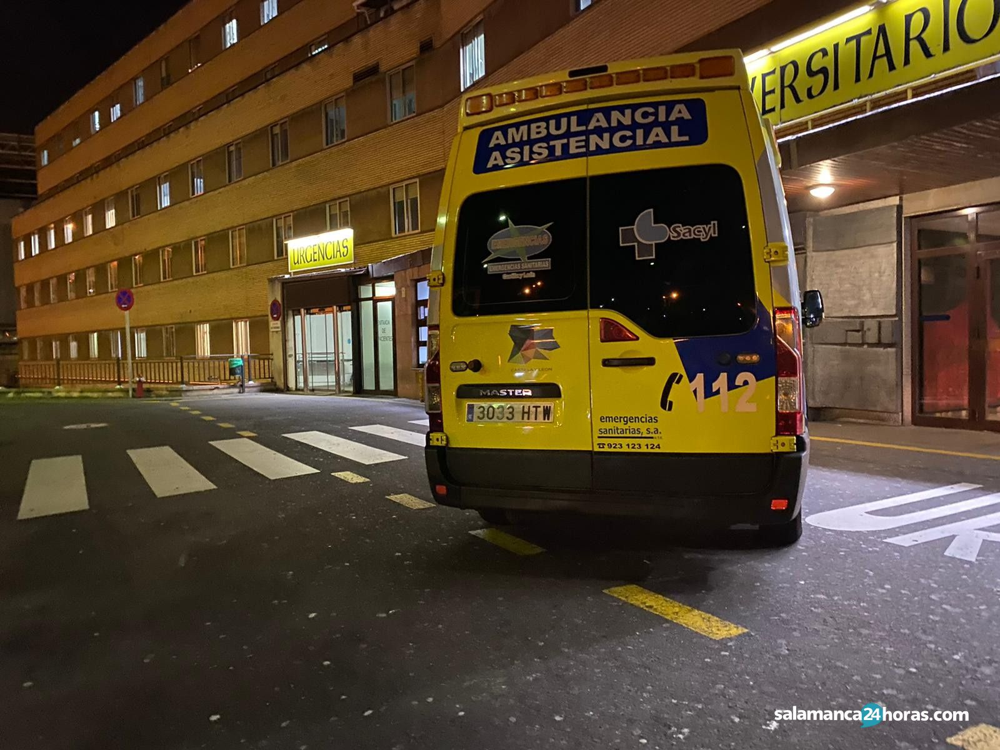

¿Qué es el Tratamiento de Hospitalización Nocturna? El tratamiento de hospitalización nocturna es una modalidad en la que los pacientes ingresan a la clínica por la noche y regresan a sus hogares durante el día. Este tipo de tratamiento es ideal para aquellos que necesitan un entorno estructurado y seguro durante las horas más vulnerables, pero que también desean mantener su vida cotidiana y responsabilidades laborales o familiares. Componentes del Tratamiento Monitoreo Médico: Durante la noche, los pacientes reciben monitoreo médico constante para asegurar su bienestar físico y emocional. Esto incluye la administración de medicamentos necesarios y la supervisión de síntomas de abstinencia. Beneficios del Tratamiento de Hospitalización Nocturna Flexibilidad: Permite a los pacientes continuar con sus actividades diurnas, como el trabajo o el estudio, mientras reciben tratamiento intensivo durante la noche. Entorno Seguro: Proporciona un entorno seguro y estructurado durante las horas más críticas, reduciendo el riesgo de recaídas. Apoyo Continuo: Los pacientes reciben apoyo constante y monitoreo médico, lo que aumenta las posibilidades de una recuperación exitosa.
| - | - | - | - |
|---|---|---|---|
| 1 | 2 | 3 | 4 |
| RESUCITACION | EMERGENCIA | URGENCIA | URGENCIA MENOR |
| ROJO | NARANJA | AMARILLO | VERDE |
| ATENCION DE FORMA INMEDIATA | 10-15 MINUTOS | 60 MINUTOS | +2 HORAS |
.jpg)
Es un enfoque de la salud que considera al ser humano de manera integral, teniendo en cuenta no solo los aspectos físicos, sino también los emocionales, mentales, sociales y espirituales. Este tipo de medicina busca tratar la causa raíz de las enfermedades en lugar de solo los síntomas, promoviendo un equilibrio entre cuerpo, mente y espíritu

Red de apoyo diseñada para cuidar el bienestar emocional y psicológico de las personas, ofreciendo una cobertura integral que abarca distintos niveles de atención
Enfoque de cuidado de la piel y belleza que va más allá del uso de productos externos, considerando al individuo de manera integral. Este tipo de cosmética se centra en utilizar ingredientes naturales y orgánicos, promoviendo el bienestar de la piel desde dentro y fuera, al tiempo que se integran aspectos como la alimentación, el equilibrio emocional y el estilo de vida.
© 2023 Empresa Web. Todos los derechos reservados.